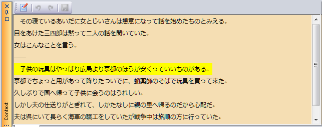
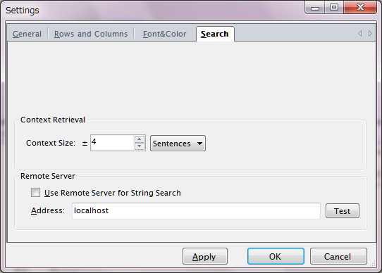

文脈の表示
ChaKiには、任意の文がコーパス内でどのような文脈内に出現しているかを確認するための"Context"パネルがあります。
文節・係り受けを編集する操作と共通になりますが、KWIC結果ビューに表示されている任意の文において IndexカラムからSenカラムまでの範囲（つまり文本体が表示されていない場所）をダブルクリックすると、その文の前後文脈がContextパネルに表示されます。

ChaSen, Mecabなどからインポートした場合、EOSは改行に置き換えられているため、文末で改行されて表示されます。ダブルクリックした文については背景が黄色で表示されます。また、その行のKWIC Center語が存在する場合、Center語は背景が赤で表示されます。
前後の文をいくつまで表示するかについては、設定画面（メニューの"Option"-"Settings"により表示される）の"Search"タブで Context Size欄の値を編集することにより変更できます。

文境界の編集
Contextパネルを用いて、文境界を変更することができます。Contextパネルのツールバーから"Edit"  を押すことにより、
編集モードに入ります。編集モードにおいては、パネルの背景は白色になります。
を押すことにより、
編集モードに入ります。編集モードにおいては、パネルの背景は白色になります。
編集モード内では、DBは文境界編集サービスによってロックされます。DBのロック中は文節・係り受けの編集（このサービスもDBをロックします）を同時に行うことはできません。
- KWIC行をダブルクリックした時点では、文脈・係り受け編集(Dependencyパネル)が優先され、
そちらのサービスがDBをロックしています。これはDependencyパネルのツールバー"Unlock"
 を押すまで
続きます。
を押すまで
続きます。
- しかし、明示的にパネルを移ってUnlockするのは手間がかかるため、Dependencyパネルでまだ何も 編集を行っていない時（i.e. Undoバッファが空の時）に限り、自動的にロックを解除し、 文境界サービスがロックを奪うことができるようになっています。
- 文境界サービスのロックは、セーブするか、再度Editボタンを押して編集モードを抜けるまで続きます。
- 稀にロックの検出のため30秒程度のタイムアウト待ちが発生して操作がフリーズすることがあります。 タイムアウト後にエラーメッセージが出ますので、ロックを解除した上で再度操作を行って下さい。
さて、編集は、文のSplitとMergeにより行います。テキストエディタでの操作と同じ感覚で行えます。 文内の任意の位置で改行キーを入力すると、その位置でSplitされます。 文頭でBSキーを押すと、前の文とMergeされます。 文末でDelキーを押すと、次の文とMergeされます。 以上の操作を繰り返し行って、表示されている文境界が正しくなったら、Contextパネルのツールバーから "Save"ボタン をクリックして確定します。
- 語の境界以外で文を切断することはできません。
- 文節やSegmentアノテーションが存在する場合に、その途中で文を切断することはできません。
- Mergeした時は、末尾への係り受けはすべて次の文の最初の文節に係るように変更されます。
- Splitした時に係り受け先を失った係り受けについては、すべて文末に係るように変更されます。
KwicListの同期
文境界を編集するとKwicViewに表示されている結果とDBの内容とが食い違ってきますが、 KwicViewのリロード機能によりViewの更新を行うことができます。